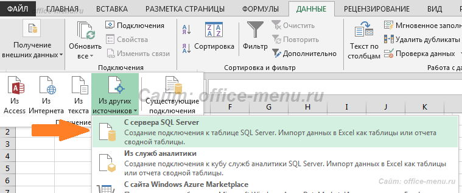
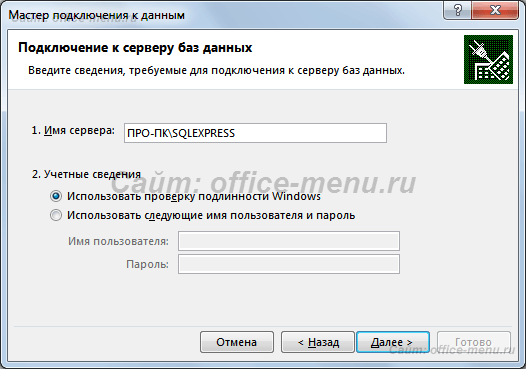
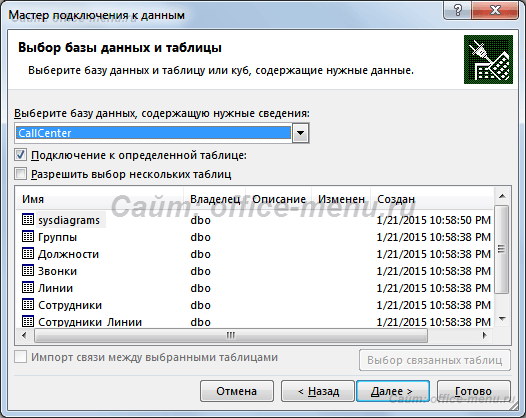
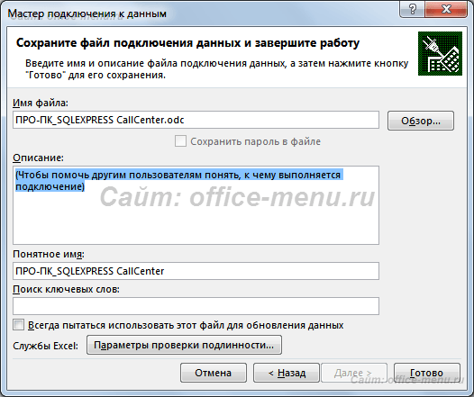
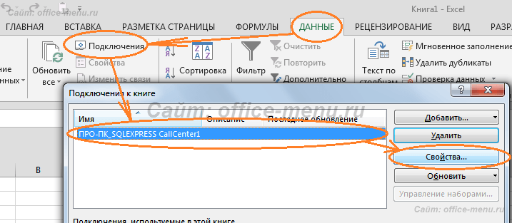
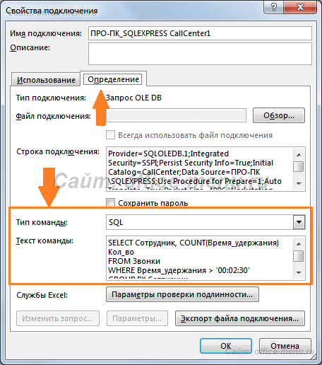

Для обработки данных в Excel требуется сначала получить сами данные. Часто такая информация находится во внешних источниках, а именно базах данных. В этой статье описывается подключение электронных таблиц к БД MS SQL Server.
На вкладке «Данные» имеется область «Получение внешних данных» на которой необходимо кликнуть по кнопке «Из других источников». Раскроется список источников, к которым можно осуществить подключение. В этом списке выберите пункт «С сервера SQL Server».
Теперь на экране появилось окно мастера подключения к данным. Изначально требуется указать имя сервера и учетные сведения для подключения (если Вы их не знаете, то обратитесь к администратору БД).
После заполнения формы нажмите кнопку «Далее», чтобы перейти к выбору базы данных.
Здесь же можно выбрать таблицы, из которых будут грузиться данные, или же снять галочку с пункта «Подключение к определенной таблице».
Нажмите кнопку «Далее», чтобы задать имя файла подключения и описание, чтобы в дальнейшем было проще найти данный файл.
Нажав кнопку «Готово», Вам будет предложено произвести импорт данных с сервера (если в мастере подключений Вами не была выбрана таблица, то сначала ее придется выбрать).
В текущем окне можно выбрать место и способ представления импортируемых данных: таблица, сводная таблица, сводная диаграмма или пропустить импорт, выбрав пункт «Только создать подключение».
По умолчанию, при импорте из SQL Server, Excel выгружает всю таблицу. Можно изменить выборку, указав SQL-запрос.
Для этого во время импорта данных (предыдущий рисунок) необходимо кликнуть по кнопке «Свойства», если подключение создается впервые, либо, если файл подключения уже был добавлен к книге, на вкладке «Данные» в области «Получение внешних данных» кликнуть по кнопке «Подключения», выбрать нужное из списка и открыть его свойства.
В свойствах подключения на вкладке «Определение» в поле «Тип команды» поменяйте значение на «SQL», а в поле «Текст команды» введите SQL-код и нажмите «ОК».
Теперь, чтобы получить данные с помощью нового подключения, достаточно вызвать его из существующих подключений на вкладке «Данные» в области «Получение внешних данных». Дальнейшая процедура импорта аналогична рассмотренному выше.